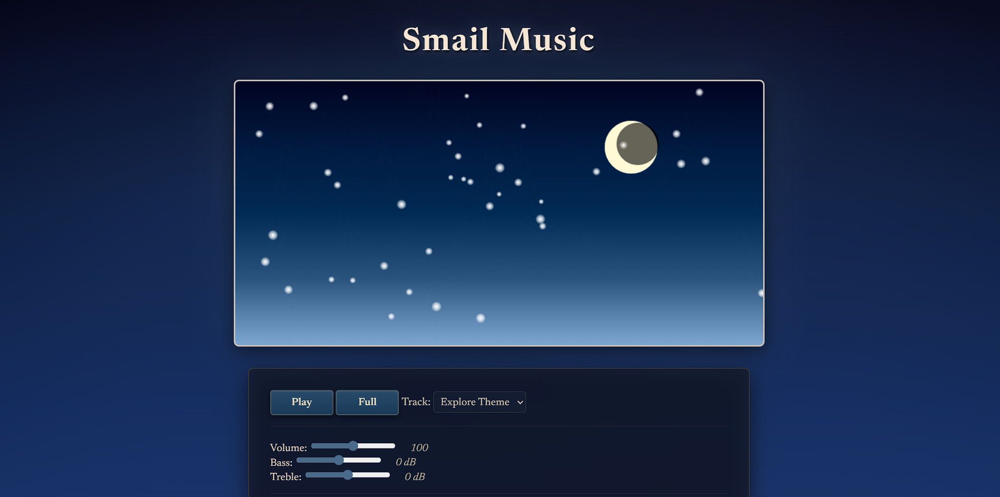

01
Audio Visualizer

I created a night sky-inspired web application audio visualizer using JavaScript and Canvas API. I also designed the website layout and aesthetic, and it was later converted to TypeScript and Bulma for practice purposes, but the website linked is the base JavaScript version. It started as a school project, but I wanted to make it my own, and had already made a couple other audio visualizers in C++ and Max, but this one was my favorite out of all of them. I liked the way it looked and its simple interface, but the tracks used in the original assignment were copyrighted songs, and the experience did not feel unique or novel. I have always loved music, so over time I accumulated enough self-composed tracks to replace the default ones with my own, making the project special to me. I also made this project pre-portfolio, so the design for this website was partially inspired by the aesthetic sense of this audio visualizer, since I liked the color scheme so much. You can tell that I really like the color blue.
The track labeled "explore" was created using Pro Tools and self recorded sounds and was designed for a beautiful but slightly off-putting cathedral, so I used digital instruments like organs and orchestral instruments. The track snippets labeled "combat" and "chase" were made in conjunction with this one and were designed with the intention of being set in the same in-game area. Both of those tracks are short since they are designed to be loopable and were practice for creating compositions for games.They were also created using Pro Tools. The names are quite simple since they were named after what game state they were designed for. If I were to actually use them in a game, I would give them proper names. I also wanted to give the listener an idea of the context of a song, since without context, the single instance of a loopable game track may seem confusing. The "chase" theme would be especially jarring without the added context of it being for when the player gets chased.
The track named "defeat" was a remix of the explore theme using a different BPM and different instrumentation. I needed a defeat track for a school project, and someone had once told me that the original "explore" sounded like it was setting the scene for a tragedy, so I wanted to expand on that concept and see how tragic I could really make it. This track started in Pro Tools and ended in Ableton.
"Pixelitis" was created because I realized that most of my composing projects were orchestral sounding and did not place a lot of importance on unique, varied beats. I wanted to create a very digital sounding track with arcade noises and other drums as the beat since I had not composed beats for the other featured projects, instead using drum loops. I figured that such an electric sounding song would be a pretty polar opposite to what I had previously been doing, and I wanted to challenge myself to do something new. This one was created in Logic Pro.
I included a link to the audio visualizer if you'd like to listen!